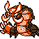

#348
Centiskorc
FireBug
Abilities: Flash Fire, White Smoke, Flame Body
Base stats BST 525
HP100
Attack115
Defense65
Speed65
Sp. Atk90
Sp. Def90
Evolution
None detected.
Level-up learnset
LevelMoveType
Lv. 1BiteDark
Lv. 1EmberFire
Lv. 1SmokescreenNormal
Lv. 1WrapNormal
Lv. 1Struggle BugBug
Lv. 12Flame WheelFire
Lv. 15Bug BiteBug
Lv. 24Fire FangFire
Lv. 35SlamNormal
Lv. 38Fire SpinFire
Lv. 46CrunchDark
Lv. 55Power WhipGrass
Lv. 56Heat CrashFire
Lv. 60Leech LifeBug
Lv. 60LungeBug
Lv. 66Flare BlitzFire
Wild locations
Not found in the parsed wild encounter tables.